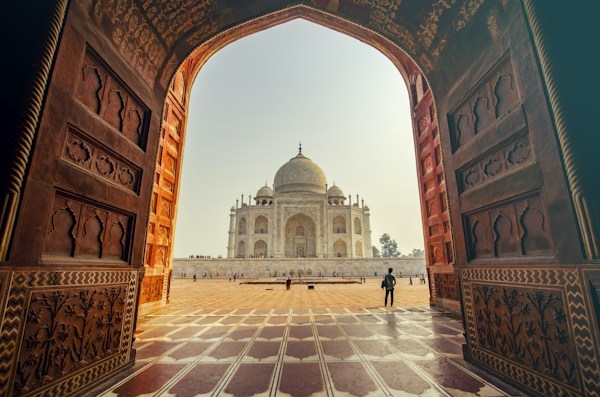

Temple Album
☰
Home
Old
New
Large
Small
Temple Gallery

Salt Lake Temple
Accra Ghana Temple
Rome Italy Temple
Paris France Temple
London England Temple
Nairobi Kenya Temple
Tokyo Japan Temple
São Paulo Brazil Temple
Johannesburg South Africa Temple